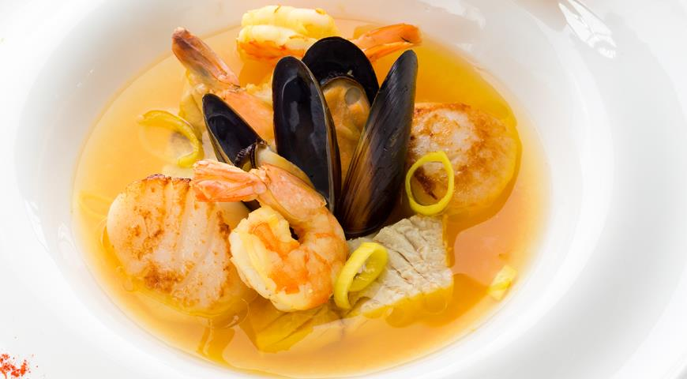
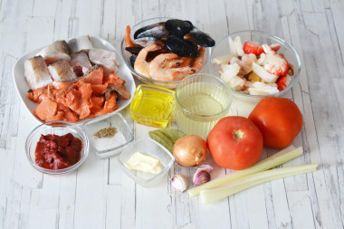

Буйабес — bouillabaisse
На весь мир знаменит еще один французский суп с гребешками, мидиями и крабами – буйабес.
Это блюдо, придуманное марсельскими рыбаками, традиционно готовится без добавления картофеля.
Для приготовления буйабеса используют филе морского петуха, солнечника, морского скорпиона и другие разновидности местной рыбы.
Считается, чем больше видов рыбы входит в блюдо, тем лучше и наваристее бульон.

Буйабес принято подавать в высоких тарелках с чесночным соусом роули и свежим хрустящим хлебом или тостами. К такому рыбному супу отлично подойдет белое вино.
Ингридиенты
- Вода (2.5 л.)
- Помидоры (500 г.)
- Хек (400 г.)
- Королевские креветки (200 г.)
- Вино белое сухое (200 мл.)
- Красная рыба (100 г.)
- Лук репчатый (1 штк.)
- Чеснок (3 зубч.)
- Лавровый лист (2 штк.)
- Растительное масло (4 стол л.)
- Томатная паста (2 стол л.)
- Сеции (по вкусу)

Пошаговый рецепт буйабеса
- Нарежьте мелко сельдерей, весь лук-порей, 1 дольку чеснока и 1 луковицу.
- Обжарьте, постоянно помешивая, овощи в 7 ст. л. оливкового масла.
- Промойте рыбу, очистите ее от внутренностей, удалите хвосты, головы и плавники, поместите ее в сковороду к жарящимся овощам.
- Долейте воды, чтобы она была выше уровня рыбных обрезков, а потом тушите 20 минут.
- Обдайте помидоры кипятком, снимите с них кожицу и измельчите мякоть в пюре
- Порежьте мелко фенхель, еще 1 луковицу, 2 дольки чеснока, обжарьте овощи на сковороде в небольшом количестве масла.
- Добавьте к овощам измельченную мякоть помидоров
- ЧПроцедите остывший рыбный бульон, удалите головы, протрите овощную гущу через сито.
- Влейте бульон к обжаренным овощам, смешайте с протертыми овощами из бульона, посолите и добавьте приправы.
- Положите в бульон куски разделанной рыбы и сварите ее до мягкости.
- ТПодавайте бульон отдельно — с подсушенным багетом и прованским чесночным соусом руй. Рыба выкладывается в тарелку, и каждый добавляет ее в бульон самостоятельно